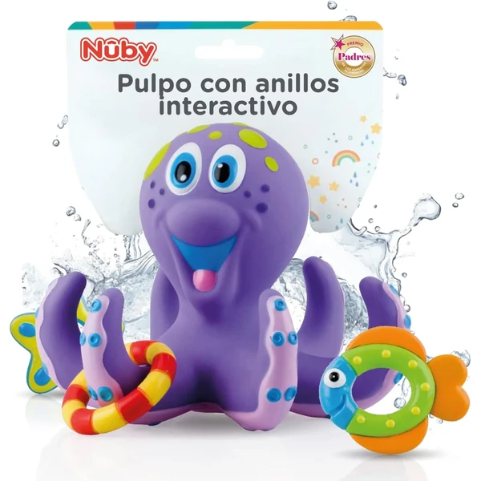
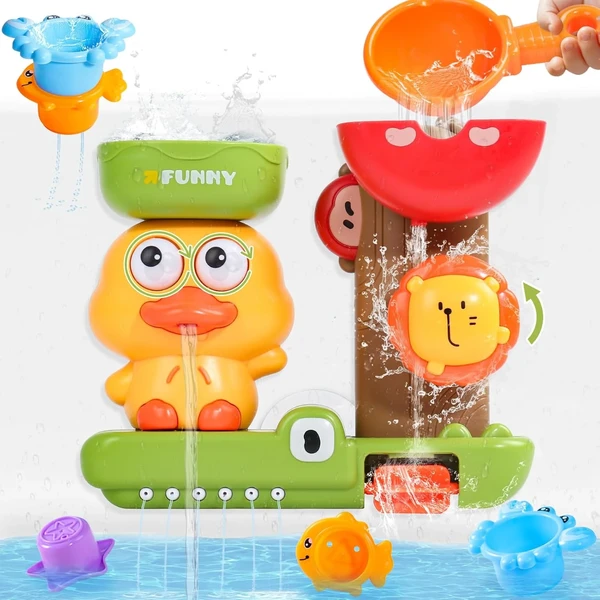
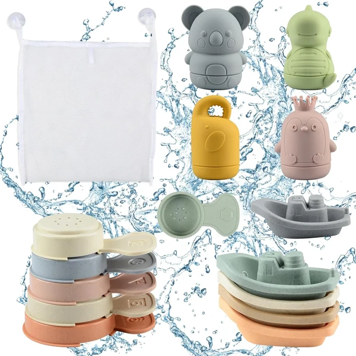
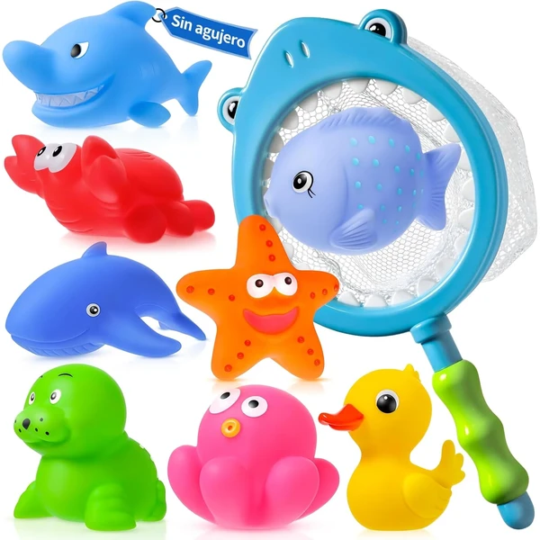
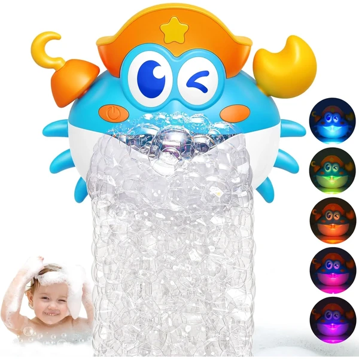
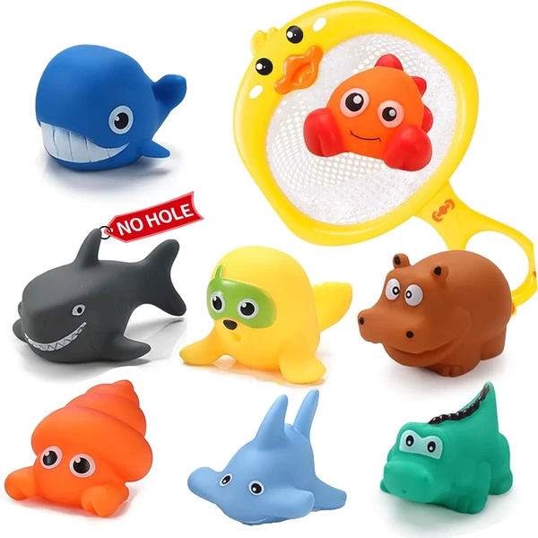
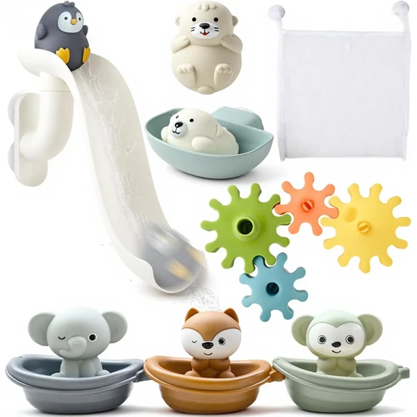

A los 2 años el momento del baño sigue siendo una gran oportunidad de juego, ahora con propuestas algo más elaboradas como juegos de trasvase, barcos que flotan o figuras para clasificar por colores. El niño experimenta con conceptos como lleno y vacío, flota y se hunde, dentro de un contexto relajado y divertido. En esta selección encontrarás juguetes de baño pensados para esta edad.
¿Qué desarrollan los juguetes de baño?
Jugar con el agua a esta edad introduce de forma natural conceptos como lleno, vacío, flota o se hunde.
- Coordinación mano-ojo
- Motricidad fina
- Relación causa-efecto
- Clasificación
- Exploración
- Diversión

Pulpo flotante de baño Nuby
Un juguete de baño flotante con forma de pulpo y tres anillos para lanzar y encestar en sus tentáculos, pensado para trabajar la coordinación ojo-mano mientras juega en el agua.
⭐ ¿Por qué nos gusta?
- ✔ Tres anillos para lanzar y encestar.
- ✔ Completamente sellado, no entra agua.
- ✔ Flota y no hay que escurrirlo tras el baño.
💬 Lo que más destacan las familias
Lo que más suele gustar es lo bien pensado que está para encestar los anillos en los tentáculos, un juego sencillo que engancha rápido a los peques. También se valora que esté completamente sellado, sin miedo a que le salga moho por dentro.
Ver en Amazon

Cascada de bañera con tazas apilables
Un juguete de bañera con forma de pato que crea una cascada al verter agua, haciendo girar sus ojos y engranajes. Incluye tres tazas apilables de animales y una cuchara, y se fija a la pared con ventosas.
⭐ ¿Por qué nos gusta?
- ✔ Cascada con engranajes que giran al verter agua.
- ✔ Incluye tres tazas apilables y una cuchara.
- ✔ Ventosas que lo fijan a la bañera o azulejos.
💬 Lo que más destacan las familias
Muchos padres coinciden en que el efecto cascada engancha a los niños durante un buen rato, sobre todo al ver girar los ojos y los engranajes mientras vierten agua. Se agradece también que las ventosas sujeten bien el juguete a la pared de la bañera.
Ver en Amazon

Set 16 piezas de baño BIQIQI
Un set de dieciséis piezas para la bañera: cuatro animales de silicona para apretar, cinco barquitos, seis cucharas y una bolsa para guardarlo todo. Para apretar, apilar, colar y verter agua.
⭐ ¿Por qué nos gusta?
- ✔ Dieciséis piezas con juegos variados.
- ✔ Animales de silicona apta para morder.
- ✔ Bolsa de almacenaje incluida.
💬 Lo que más destacan las familias
Una de las cosas más comentadas es la variedad de juego que ofrece, entre apretar los animales de silicona, apilar y colar agua con las cucharas. También gusta que venga con su propia bolsa para guardarlo todo ordenado.
Ver en Amazon

Animales marinos de baño sin agujeros
Un set de animales marinos de goma flotantes, sellados sin agujeros para que no entre agua ni se forme moho dentro. Incluye una red con forma de tiburón para pescarlos.
⭐ ¿Por qué nos gusta?
- ✔ Sellados sin agujeros: no acumulan moho.
- ✔ Incluye red de tiburón para pescar.
- ✔ Goma suave sin BPA.
💬 Lo que más destacan las familias
Los compradores valoran especialmente que no quede agua estancada dentro de los animalitos, así que no hay que preocuparse por el moho. A los niños les suele encantar perseguirlos por la bañera con la red antes de guardarlos.
Ver en Amazon

Máquina de burbujas cangrejo iKidiki
Una máquina de burbujas con forma de cangrejo y luces LED que llena la bañera de pompas de colores. Se fija a la pared con ganchos adhesivos, sin ventosas que se despeguen.
⭐ ¿Por qué nos gusta?
- ✔ Burbujas y luces LED de colores.
- ✔ Ganchos adhesivos, más firmes que las ventosas.
- ✔ Boquillas mejoradas que no se obstruyen.
💬 Lo que más destacan las familias
Entre los comentarios más habituales aparece que consigue animar el momento del baño a los niños que normalmente se resisten, gracias a las burbujas y las luces de colores. También se comenta que los ganchos adhesivos aguantan mejor que las ventosas tradicionales.
Ver en Amazon

Animales flotantes sin agujeros Tangdudu
Otro set de animales marinos flotantes sellados sin agujeros, con red de pato para pescarlos. Un concepto casi idéntico al set de animales marinos de esta lista, de otro fabricante.
⭐ ¿Por qué nos gusta?
- ✔ Sellados sin agujeros: no acumulan moho.
- ✔ Incluye red con forma de pato.
- ✔ Goma suave sin BPA.
💬 Lo que más destacan las familias
Se repite bastante el comentario de que resuelve bien el problema del moho, ya que al estar sellados no queda agua atrapada en su interior. A los niños les encanta perseguirlos por el agua y pescarlos con la redecita antes de salir del baño.
Ver en Amazon

Set de baño con tobogán y engranajes
Un set de bañera con un tobogán por el que se deslizan tres animales, cuatro engranajes que giran con el agua, tres barquitos apilables y tres marionetas de dedo. Se fija a los azulejos con ventosas.
⭐ ¿Por qué nos gusta?
- ✔ Tobogán con tres posiciones distintas.
- ✔ Engranajes que giran al verter agua.
- ✔ Bolsa de almacenaje incluida.
💬 Lo que más destacan las familias
No es raro encontrar comentarios sobre la cantidad de opciones de juego que ofrece, entre el tobogán, los engranajes y las marionetas de dedo. Suele ser el juguete de baño con el que los niños pasan más tiempo entretenidos.
Ver en Amazon